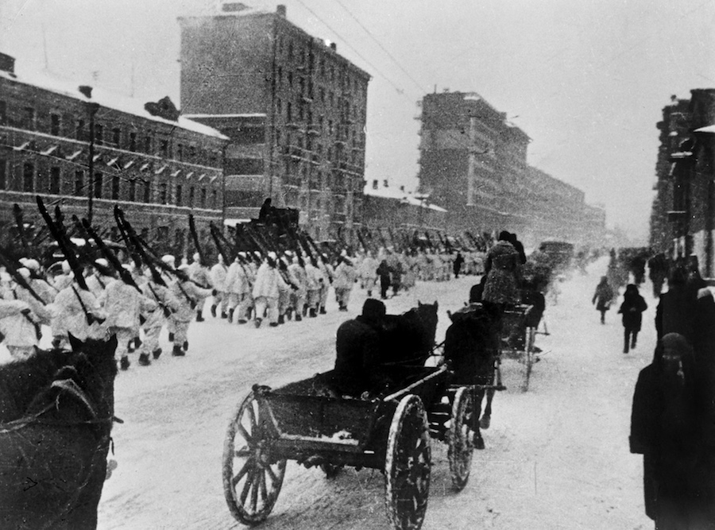

Москва — горад герой!
У агрэсіўных планах фашысцкай Германіі захоп Масквы меў першараднае значэнне, бо менавіта з падзеннем сталіцы звязвалася
поўная перамога нямецкіх войскаў над СССР.

Для захопу горада быў распрацаваны план наступальнай аперацыі пад кодавай назвай «Тайфун», у адпаведнасці з якім былі
зроблены два буйных наступу на Маскву ў кастрычніку і лістападзе 1941 года. Сілы былі няроўнымі. Для першай
буйнамаштабнай аперацыі гітлераўскае камандаванне выкарыстала 74 дывізіі (у тым ліку 22 матарызаваныя і танкавыя), за
1,8 млн афіцэраў і салдат, 1390 самалётаў, 1700 танкаў, 14 тыс. Мінамётаў і гармат. Другая аперацыя налічвала 51
баяздольную дывізію. З боку савецкіх войскаў налічвалася за 1,2 млн чалавек, 677 самалётаў, 970 танкаў і 7600 мінамётаў
і гармат.
774 ТАНКА
удзельнічала ў контрнаступленні
НА 200 КМ
былі адкінуты нямецкія войскі

Падзеям ваенных гадоў у Маскве прысвечана мноства мемарыялаў і помнікаў. Адзін з самых вядомых - Магіла Невядомага
Салдата ў Аляксандраўскім садзе (паўночны бок Крамля). У снежні 1966 году кіраўніцтвам горада было прапанавана стварыць
помнік ўсесаюзнага значэння, прысвечаны ўсім салдатам-героям, якія загінулі пры абароне Масквы. Мемарыял уяўляе сабой
надмагільную пліту з бронзавым баявым сцягам, на якім ляжыць салдацкая каска і лаўровая галіна.